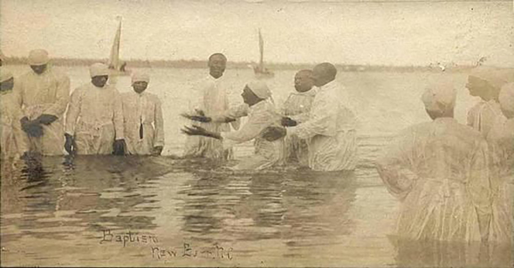

This African American spiritual sums
up the commitment of a candidate for baptism: the request for the rite,
an expression of motivation, and a succinct affirmation of faith. This
song makes use of a recurring image in spirituals: the waters of the
Jordan River. These waters are a metaphor for liberation, not only from
oppression but from the bondage of earthly life in general. The
ambiguous “water” mentioned in the opening phrase of the text might tap
into a whole spectrum of metaphorical implications. The text summarizes
the journey of those who come for baptism in a community that then also
renews their own baptismal vows, together desiring to be united with
Christ (st. 1), recognizing of our unworthiness (st. 2), affirming our
love for Jesus (st. 3), and confessing that Jesus is our Savior (st. 4).
The
widening melodic lines build anticipation and give weight to the final
phrase of each stanza.
An African-American spiritual, this song makes use of a recurring
image in spirituals: the waters of the Jordan River. These waters
are a metaphor for liberation, not only from oppression but from the
bondage of earthly life in general. The ambiguous “water” mentioned
in the opening phrase of the text might tap into a whole spectrum of
metaphorical implications. The text summarizes the journey of those
who come for baptism in a community that then also renews their own
baptismal vows, together desiring to be united with Christ (st. 1),
recognizing of our unworthiness (st. 2), affirming our love for
Jesus (st. 3), and confessing that Jesus is our Savior (st. 4).
“Take Me to the Water”
African American Spiritual
Africana Hymnal, 4045
Worship & Song, 3165
Zion Still Sings, 190
Take me to the water,
take me to the water,
take me to the water
to be baptized.
None but the righteous,
none but the righteous,
none but the righteous
shall see God.
Water is integral to understanding deliverance and freedom in the spirituals
(“Go down Moses”), a representation of passage from this life to the next
(“Deep river”), and an agent of healing (“Wade in the water”). “Take Me to
the Water" is a rare example of a spiritual explicitly devoted to the
sacrament of baptism.
This hymn first appeared in print inYes,
Lord! Church of God in Christ Hymnal(Memphis, 1982).
However, recordings and possible references to the spiritual in the accounts
of enslaved Black people indicate that its roots may extend at least to the
turn of the twentieth century and perhaps to the antebellum South. While
found primarily in African American hymnals, other mainline denominational
collections now include the spiritual.
In addition to the two stanzas listed above, additional stanzas found in
hymnals include:
I love Jesus . . . Yes, I do.
He’s my Savior . . . Yes, he is.
In the name of Jesus . . . we shall be saved.
I know I’ve got religion . . . Yes, I do.
Glory, hallelujah . . . to be baptized.
A BRIEF HISTORY OF BAPTISM AND ENSLAVED AFRICANS
The simplicity of the words of this spiritual belies the deep cultural
understandings surrounding water spirituality that accompanied Black people
from Africa. Furthermore, baptismal practices in colonial America encoded
inhuman views of enslaved people. Enslaved Africans found a deep connection
between river baptisms and the spirituality of the African traditional
religion. Water was the realm of the spirits, representing a source of life
at creation and at birth, an instrument of purification linked to initiation
rites, and a locus of regeneration (Tounouga, 2003, p. 283). Undoubtedly,
these meanings comingled with the experience of Christian baptism as
practiced during American colonial times.
Baptism was fraught with many complications upon the arrival of enslaved
Africans in 1619 in British colonial America. European settlers doubted the
humanity of Black people and, therefore, if they were capable of
understanding and receiving baptism (Neri, 1940, p. 220). The following
newspaper account details an early colonial argument against baptism:
The first slaves that were brought to America were pagans. . . To speak the
truth, there was not, in the seventeenth century, much interest on the part
of whites in North Carolina in religious matters . . . [T]here was for a
time, a well-defined notion among the slaveowners that a slave who was a
church member could not be held in bondage. This notion grew out of a
principle which was common to the legal concept of Europe at the time that .
. . it was allowable to enslave a man who was pagan, but that it was not
allowable to enslave a man who was a Christian. (Bassett, Raleigh News and
Observer, 1899)
This argument may have masked a more significant concern. Though proselyting
was a priority in colonial America, neither the masters of enslaved people
nor missionaries permitted baptism in the seventeenth century. Conversion
was a possible step toward slave rebellion (Gerbner, 2018, n.p.). These
views were legally encoded in the Colony of Virginia statutes in 1664,
asserting that baptism did not bring freedom from servitude to baptized
Black people. This law was strengthened in 1706 in six colonies, stating
that a baptized Black person could not threaten the legal rights of a master
of enslaved people (Costen, 2007, p. 20). Furthermore, masters were
generally against the catechesis of enslaved Black people, therefore
distorting a crucial aspect of the rite of Christian initiation. Masters
feared that the message of freedom in Christ could be construed to mean
freedom from physical bondage (Costen, 2007, p. 21).
Some antebellum accounts indicate that only white ministers could baptize
Black candidates. In contrast, African American “cheerbackers” (spiritual
advisors) could not conduct baptisms (James Bolton, in Killion and Waller,
1973, p. 24). Furthermore, masters had to give permission for enslaved
people to be baptized (Thomas Lewis Johnson, 1909, p. 17; in Guenther, 2016,
p. 127).
HISTORICAL EVIDENCE OF “TAKE ME TO THE WATER”
Two audio recordings from 1926 (September, New York City) and 1927
(February, Memphis, Tennessee) fromTake
Me to the Water: Immersion Baptism in Vintage Music and Photography
1890–1950(2009) offer insight on the role of this
spiritual in immersion baptism rituals in the early twentieth century. The
pastor offered a brief baptismal sermon. As the candidates made their way
into the water (most likely a river), the people sang the first stanza under
the pastor's leadership. In these recordings, the final line is modified to
“and baptize me.” The pastor continues to chant in the same key, “Beyond[?]
the holy commandments, I baptize you my brother/sister on the confession of
your sins in the name of the Father, and of the Son, and of the Holy Ghost.”
The pastor then led the people in singing stanza 2, “None but the
righteous.” To view rare footage of a river baptism during this era, see the
following YouTube video recording fromNational
Geographicin the Smithsonian National Museum of African
American History and Culture, Washington, D.C.:https://www.youtube.com/watch?v=akaAMYGJ44k.

African
American River Baptism, New Bern, North Carolina, late 19th century.
Elisha Garey (?1818–1901), an enslaved person, provides an undated account
naming a song that may be either a variant or precursor to the current
spiritual:
Warn’t no pools on the churches to baptize folks in them, so they took them
down to the creek. First, a deacon went in and measured the water with a
stick to find a safe and suitable place. Then they was ready for the
preacher and the candidates. Everybody else stood on the banks of the creek
and joined in the singing. Some of them songs was “Lead me to the Water for
to be Baptized,” (Elisha Garey, Killion and Walker, 1973, p. 70; in
Guenther, 2016, p. 127)
Another textual variant may have been “Marchin for de water / For to be
baptized” (Carrie Hudson, in Guenther, 2016, p. 357).
This author has not located a printed version of the spiritual before its
relatively recent appearance in hymnals. For example, it does not appear in
any form in the seminalSlave
Songs of the United States(1867), the first published
postbellum collection of African American songs. However, one song in the
collection, “Almost over” (no. 97), may have had a baptismal use:
1. Some seek de Lord and they don’t seek him right,
Pray all day and sleep all night;
And I'll thank God, almost over, almost over, almost over,
And I'll thank God, almost over.
2. Sister, if your heart is warm,
Snow and ice will do you no harm.
3. I done been down, and I done been tried,
I been through the water, and I been baptized.
An editorial note follows this song in the collection: “A baptismal song, as
the chattering ‘almost over’ so forcibly suggests.”
Documented performances by various African American centers for the revival
of spirituals, including the Fisk Jubilee Singers, do not mention “Take Me
to the Water.” Neither is it included in standard collections of concertized
spirituals produced by the Johnson brothers, James Weldon Johnson and John
Rosamund, and Harry T. Burleigh.
Worship & Song(2011) provides four stanzas with simple
vocal parts.The
Africana Hymnal(2015) andZion
Still Sings(2007) include six stanzas and a gospel-style
keyboard accompaniment by Marilyn E. Thornton (b. 1953), who served as the
music editor forZion
Still SingsandThe
Africana Hymnal. A graduate of Vanderbilt University (M.Div.), she also
has music degrees from Howard University (B.M. in Music History) and the
Peabody Conservatory of John Hopkins University (M.M. in Violin). Rev.
Thornton, an author of several books, is an elder in full connection with
The United Methodist Church, currently serving as pastor of Dixon Memorial
United Methodist Church (Nashville) and director of the Wesley Foundation at
Fisk University.
CONCLUSION
The lack of printed versions of the spiritual in no way invalidates its
importance in African American religious experience. Based on the history of
baptism among enslaved Africans, this spiritual, or a related version, may
have been reserved only for clandestine baptismal rituals in the antebellum
South known as “brush arbor” (or “bush” or “hush arbor”) meetings of what
Melva Wilson Costen refers to as the “Invisible Institution” (Costen, 2007,
p. 25). Furthermore, even during Reconstruction and the Jim Crow South,
African Americans may have continued to hold river baptisms beyond the
purview of white churches and members of the larger community. Some whites
would have considered larger gatherings of Blacks outside of the church
building to be suspicious and, perhaps, dangerous.
Eileen Guenther,In
Their Own Words: Slave Life and the Power of Spirituals(St.
Louis: MorningStar Music Publishers, 2016).
Thomas Lewis Johnson,Twenty-Eight
Years a Slave, or the Story of My Life in Three Continents(Bournemouth,
England: W. Mate & Sons, 1909).
Ronald Killion and Charles Walker, eds.Slavery
Time When I Was Chillun Down on Master’s Plantation(Savanah,
Georgia: The Beehive Press, 1973).
Philip Neri, “Baptism and Manumission of Negro Slaves in the Early Colonial
Period,”Records
of the American Catholic Historical Society of Philadelphia51,
nos. 3/4 (September and December 1940): 220–232,https://www.jstor.org/stable/44209369(accessed
August 31, 2021).
Take Me to the Water: Immersion Baptism in Vintage Music and Photography
1890–1950(Atlanta, Georgia: Dust to Digital, 2009):
Camille Talkeu Tounouga, “The Symbolic Function of Water in Sub-Saharan
Africa: A Cultural Approach,” tr. Odile Brock,Leonardo:
The MIT Press36, no. 4 (August 2003), p. 283.https://muse.jhu.edu/article/45618(accessed
August 31, 2021).
Devotional Thoughts Based on the Glory to God Hymnal
Matthew 3:13-17
Then Jesus came from Galilee to John at the Jordan, to be baptized by
him. John would have prevented him, saying, “I need to be baptized by you,
and do you come to me?” But Jesus answered him, “Let it be so now; for it is
proper for us in this way to fulfill all righteousness.” Then he consented.
And when Jesus had been baptized, just as he came up from the water,
suddenly the heavens were opened to him and he saw the Spirit of God
descending like a dove and alighting on him. And a voice from heaven said,
“This is my Son, the Beloved, with whom I am well pleased.”
On Sunday, December 30, 1962, I was baptized by Rev. Marvin Hombree at
Tabernacle Baptist Church in Union, South Carolina. On a weekday morning in
October 1976, I was received into the membership of First Presbyterian Church in
Boone, North Carolina. That day the pastor and two elders came to my apartment
and we spoke about faith and baptism. As it was raining that morning, I told
them that I was being baptized that time by sprinkling. Actually, in the
Presbyterian tradition, baptism is administered only once and so I was baptized
by immersion. Both modes of baptism are acceptable provided we are baptized with
water and in the name of God the Father, God the Son, and God the Holy Spirit.
The text for today is Matthew’s account of Jesus’ baptism by John in the Jordan
river. In as much as the text reads “just
as he (Jesus) came up from the water,” we recognize that Jesus must have
been immersed. Yet the amount of water used for baptism is not what is most
important. As Jesus came up from the water, the heavens opened, and the Spirit
of God descended like a dove and alighted on Jesus. God spoke: “This
is my Son, the Beloved, with whom I am well pleased.”
Today’s hymn is an African American spiritual entitles “Take Me to the Water.”
The first verse identifies with Jesus who came to John requesting to be
baptized. “Take me to the water to be baptized.” Verses 2 and 3 are motives for
seeking to be baptized – to express love for Jesus and to acknowledge Him as
Savior. The fourth stanza expresses praise to God for this rite/sacrament.
Prayer
O God, we thank You for the graceful water of baptism, for being cleansed of
our sins and for being identified with Jesus. As we demerge from this
sacrament, we are joined to Jesus’ family and become heirs of eternal life.
In Christ’s name, we pray. Amen.